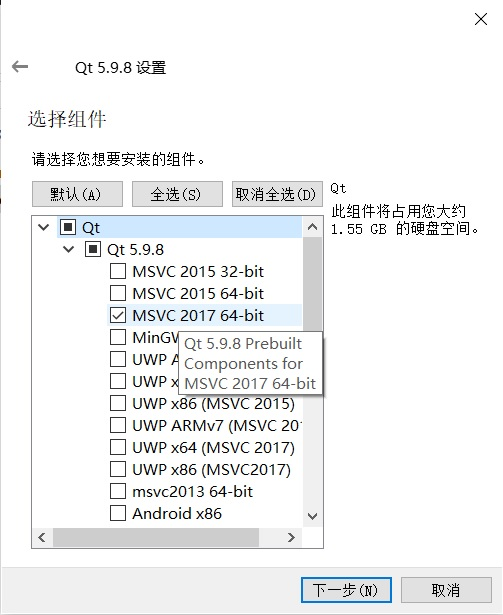
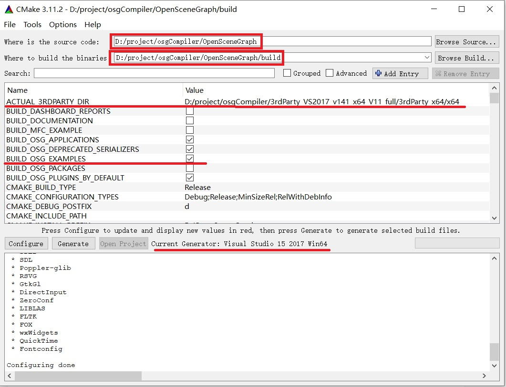

Windows下QT与OSG开发环境配置
最近想尝试使用QT开发图形用户界面，OSG负责三维展示的解决方案，于是研究了一下Windows下OSG的编译安装配置，以及在QT中集成OSG的配置过程。过程记录如下：
QT+OSG开发环境配置
QT+OSG开发环境配置将使用QT Creator集成环境进行图形用户界面开发，使用Desktop Qt 5.9.8 MSVC2017 64构建套件编译链接调试C++程序。
Visual Studio Community 2017 下载安装
下载安装Visual Studio Community 2017的“使用C++的桌面开发”工作负载。这将为QT提供MSVC2017 64bit编译套件。
CDB 调试器下载安装
没有安装CDB调试器，QT的Desktop Qt 5.9.8 MSVC2017 64构建套件前会出现感叹号，并且使用该构建套件调试时会报“Unable to create a debugging engine”错误。CDB调试器下载安装方法参考QT - OSG 开发环境配置
QT 5.9.8 下载安装
QT 5.9.8是 LTS 版本，其下载安装请参考Qt5配置开源GSL数学库。需要注意的是，QT 5.9.8安装过程，选择MSVC2017 64bit编译组件，如图1所示。

cmake下载安装
到 cmake 官网下载安装 cmake，用于osg的编译安装。
下载编译安装OSG
下载OSG及相关软件
Windows平台编译安装OSG需下载从OSG官网以下资料：
- OpenSceneGraph 3.6.4源代码
- OpenSceneGraph-Data-3.4.0，因为找不到3.6.4版本的数据
- 3rdParty_VS2017_v141_x64_V11_full
配置OSG
打开cmake，选择osg源代码路径和osg源代码构建的路径，再点击“configure”按钮，选择Visual Studio 15 2017 Win64编译套件，配置osg如图2所示。

需要配置的地方主要有：
- ACTUAL_3rdparty_DIR：配置第三方库的目录
- Build_OSG_EXAMPLES：选中即编译安装OSG的示例。
- CMAKE_INSTALL_PREFIX：设置OSG的安装目录，通常放到C盘以外的地方，防止因权限问题安装失败。
配置完成后，再持续点击“configure”按钮，知道红色警告消失。然后点击“Generate”按钮生成vs2017工程。
编译OSG
在cmake中点击“Open Project”按钮，即使用 VS2017 打开 build 文件夹下的工程，点击：生成 -> 批生成 -> 生成 Debug 和 Release 版本的 All_BUILD 即可。
安装OSG
右击解决方案的 Install 项目，点击生成，然后 Debug 平台的库文件就开始安装了，同理选择 Release 平台再重复安装。之后就可以在安装路径中看到编译的库文件了，安装路径由变量CMAKE_INSTALL_PREFIX的配置决定。
配置环境变量
OSG官方文档 Windows Compiling with Visual Studio指出，OSG安装完成后需要配置如下环境变量：
1 | OSG_ROOT points to the base of the OSG file structure (the directory that contains include, src etc. subdirectories) |
OSG测试
命令行测试
打开 cmd 命令行，输入osgversion，输出当前 osg 版本说明环境变量配置成功了，再来看看能不能导入模型文件，接着键入：
1 | osgviewer cow.osg |
这里可能会提示系统缺少 zlibd.dll，解决方法很简单：
- 拷贝第三方库的 dll 目录下的 zlib.dll 和 zlibd.dll 到 OSG 安装目录的 bin 目录中。
- 拷贝第三方库的 lib 目录下的 zlib.dll 和 zlibd.dll 到 OSG 安装目录的 lib 目录中。
这时重新键入上面的命令，就可以看到一头经典的 3D 牛了，说明 OSG 安装成功了。
QT 配置 OSG 库路径
新建一个 QT 的控制台项目，编辑 .pro 文件，加入 OSG 库的路径：
1 | win32:CONFIG(release, debug|release): LIBS += -L$$PWD/../../../OpenSceneGraph/lib/ -lOpenThreads -losg -losgDB -losgUtil -losgGA -losgViewer -losgText |
main.cpp 如下：
1 | #include <osgViewer/Viewer> |
运行，出来一头 3D 牛，即配置成功。
参考链接
- QT - OSG 开发环境配置,by 程序小哥.
- Qt5配置开源GSL数学库,by jackhuang.
- Ubuntu16.04编译安装OSG,by jackhuang.
- Windows Compiling with Visual Studio,by OpenSceneGraph.
- Visual_Studio_Community_2017离线安装,by jackhuang.
- Qt-Creator常见问题,by XenonSec.
- Visual Studio: MSB3073 error exited with code 1,by stackoverflow.
- Qt5.7 + VS2015 环境搭建,by 一去丶二三里.
- OSG学习：WIN10系统下OSG+VS2017编译及运行,by 路人甲JIA.
- error LNK2019: 无法解析的外部符号 “__declspec(dllimport) public,by OSG_weiguoying.
- 应用篇之dll lib pdb和头文件,by 阿兵-AI医疗.
- GL.h文件提示报错,by Parkergh.
- #undef 的用法及其意义,by DinnerHowe.